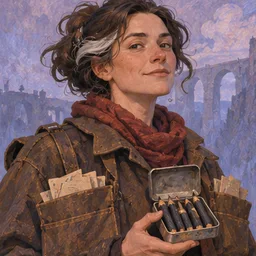
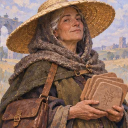

В Чёрной складке камень готовится раскрыть полупрозрачные лепестки. Несколько дней за человеческую жизнь внутри горы возникают проходы, которых прежде не было. Вы — небольшая экспедиция: проложите путь, проверьте спорные наблюдения и решите, какую картину цветения сумеете унести наверх.

Если партия изменила план
Перед чтением вступления сверьте место героев, присутствующих людей и предметы с итогом прошлого вечера. Если условия встречи отпали, сыграйте последствия там, где находится партия. Событие по расписанию может произойти за кадром. Герои узнают о нём от тех, кто был на месте.
Вечер 7. Если наблюдатели с двух постов спорят
Сохраните обе отметки отдельно и попросите каждого показать, с какого места он видел веер. Партия может вернуться с двумя свидетельствами или рискнуть временем ради ещё одного наблюдения. В атласе оставьте видимым незакрытый участок.
Группа отказалась от задания
Образцы с горы не берём. Отметим безопасную кромку для возвращающихся. Оставляем у подножья лист наблюдений для проводников. Карта у подножия показывает один проверенный проход. Цветок остаётся там, где вырос.
Игроки раскрыли тайну раньше
Положим щепку у неподвижной рейки и сравним, какие кромки исчезают под весом островка. Доступные свидетельства — Щепка и неподвижная рейка, Тяжёлые островки, тонкие кромки. Жёсткая рейка сама закрывает наблюдаемую щель. Наблюдать раскрытие можно с устойчивых островков. Ставим второго рисовальщика на неподвижный островок. Проверяем движение второй отметкой с другого берега. В атласе появится наблюдаемое смещение, никто не обещает урожая.
Партия уступила поле
Прыгуны заняли сухую полосу, наш первый промер потерян. Записываем потерянную точку измерения, не восстанавливая её по памяти. Переносим точку наблюдения и рисуем доступную грань. Утраченный промер остаётся пробелом.
За десять минут до первой игры
- Откройте первый вечер, прочитайте правду мира и участников. Остальные вечера — планы, их исход решают игроки.
- Выберите пакет под фактическое число игроков. Первые три героя — готовое ядро; остальные добавляются по порядку. Возраст игрока не определяет героя.
- Согласуйте темы, длительность и сигнал паузы. Передайте игрокам только players.html; раздатки выдавайте по отдельности после указанного открытия.
- Откройте Мастерскую проекта, создайте личный черновик и импортируйте выбранный JSON через загрузку пакета. Проверьте состав и начало в предпросмотре. Запуск кампании подтверждает ведущий штатным действием.
- Откройте иллюстрацию завязки отдельно. Портреты героев входят в файл для игроков, портреты встречных — в книгу ведущего. Тактические схемы доступны в разделе карт.
Формат и темы
8 вечеров; 3 часа: вступление или повторение 15 минут, три сцены по 45 минут, перерыв 10 минут, завершение 20 минут.
Чёрная складка — вымышленная область волшебного мира, где камень изредка расцветает тонкими полупрозрачными краями. О происхождении явления спорят полевые наблюдатели. Это природное чудо, а не сооружение, существо или язык. Верёвки, бумага, деревянные лотки и обычные фонари важнее редких реликвий. Герои используют поддерживаемые классы третьего уровня; ни один путь не требует заклинания. Описанная геология полностью фантастическая.
Чувство открытия, тёмный камень и янтарный свет; честный спор исследователей, осторожная смелость и радость неполной карты.
- Исследование неизвестного без обязательного полного объяснения
- Разница между наблюдением, догадкой и вмешательством
- Взаимная проверка и признанное авторство
- Природная красота, которую нельзя целиком унести
Границы
- 12+: смешанный подростковый и взрослый стол; без сексуального содержания, натуралистических травм и жестокости к детям.
- Пещерные темнота, высота и замкнутость обозначаются до игры. Любую тесную щель можно заменить открытым уступом с тем же выбором.
- Герои могут отступить по внешнему обходу. Цена ошибки — время, мокрые записи, потерянный ракурс или помощь товарища; смертельная ловушка не подменяет заявленное исследование.
- Эксперименты используют вымышленные свойства камня; это не руководство по реальному спелеологическому делу. Сражения необязательны, существа отступают, преследование не нужно.
Люди за столом
- Все восемь героев начинают в Доме над трещиной. Первые три образуют самостоятельное ядро; работу отсутствующего специалиста может взять любой герой с обычными припасами. Класс и возраст не дают права командовать.
- В начале каждой сцены передавайте право первого предложения следующему игроку. Подросток и взрослый получают одинаковое время; игрок выбирает персонажа независимо от возраста. Можно сказать идею, написать её или пропустить очередь без штрафа.
- Предлагайте равноценные вопросы: «Как перебраться с сухой бумагой?» и «Что измерение меняет в предмете?» Оба ответа влияют на экспедицию; ведущий не выдаёт взрослому более настоящую задачу.
- При параллельной работе сначала соберите по одному намерению с каждого поста, затем разрешите все действия в одном круге. Разделённая группа встречается на обозначенном массивном островке в конце сцены; ни один пост не разыгрывается дольше пяти минут подряд.
- Наблюдаемый признак и основная улика выдаются после подходящего действия без броска. Проверки определяют удобство, сохранность записи или дополнительную деталь. Удачная магия даёт подходящее преимущество по обычным правилам, но не заменяет выбор и не открывает уникальный путь.
- При отсутствии игрока его герой остаётся у общего склада или ведёт запись по согласованной роли. Не решайте за него личный вопрос. Вернувшемуся сообщите факты, источник и оставшуюся неопределённость; ничего не требует отсутствующего героя.
- Каждая сессия занимает 180 минут: 15 на вводную, 135 на три сцены, 10 на перерыв и 20 на итог. При 7–8 игроках используйте пары и одновременные записки, не добавляйте сцены и не урезайте чью-либо развязку.
- Ведущий вручную отмечает выбранный путь, сохранённые свидетельства и обещания НИП. Это сценарные заметки, не новые счётчики приложения. Вариант исхода выбирается по реально сыгранным действиям; будущие события не считаются исполненными заранее.
Масштабирование группы
3 игрока
Ядро: Тая, Нер и Вела. Один прокладывает путь, второй наблюдает, третий фиксирует; меняйте роли между сценами. Достаточно одного из трёх маршрутов открытия. Внешний пост можно оставить без наблюдателя, честно потеряв его ракурс.
4 игрока
Добавьте Руна или любого необязательного героя. Четвёртый отвечает за сравнение записей и помощь переходящим; он не становится обязательным лекарем. Один маршрут идёт общим составом, вторую гипотезу проверяют на месте простым опытом.
5 игроков
Две пары ведут наблюдение и путь, пятый связывает результаты и выбирает собственную точку проверки. Роли меняются. Не превращайте связного в молчаливого помощника: его сравнение решает, какой вывод попадёт на карту.
6 игроков
Три пары берут независимые наблюдения. Каждый сначала предлагает действие, затем пара согласует одно исполнение; итог проговаривают по очереди. Можно посетить разные маршруты параллельно и встретиться на Чёрных ступенях в конце сцены.
7 игроков
Две пары и тройка делят маршрут, регистрацию и контроль условий. В тройке отдельные решения у наблюдателя, рисующего и проверяющего сравнение. Ведущий собирает намерения всех семерых до разрешения опасного перехода.
8 игроков
Четыре пары ведут путь, внутренний рисунок, внешний ракурс и сопоставление времени по обычным фонарям и голосу. Все посты необязательны. После каждого круга роли говорящего и записывающего меняются; финальные личные ответы даются каждому.
Первое чтение вслух
Чёрная складка — горная страна невысоких чёрных обрывов, овечьих троп и тёплых каменных домов с толстыми ставнями. Здесь пасут овец, жгут торф и чинят верёвки длинными вечерами, а о камне говорят так, как в других краях говорят о погоде. Раз в человеческую жизнь, а то и реже, базальт под горой расцветает: на несколько дней в нём открываются тонкие полупрозрачные края, похожие на лепестки, из глубины поднимается янтарный свет, и там, где вчера была сплошная скала, появляются проходы. Старики помнят прошлое цветение смутно, по-детски, а полевые наблюдатели спорят о нём до хрипоты. Дом над трещиной стоит на краю каменного плато, у самого входа в гору. Здесь всегда останавливаются экспедиции: на длинном столе сохнут карты, на полках сушатся рукавицы, у каждого гостя своя чашка — разноцветная, с чужим рисунком. Сейчас на столе расставлены кружки, верёвочные бухты и совершенно пустые рамки для образцов. В очаге потрескивает торф, пахнет дымом, мокрой шерстью и мятным отваром. Ночью под порогом выросла чёрная щель толщиной с лист. Сейчас из неё поднимается золотистый свет, ровный и тёплый, как от лампы в соседней комнате, и половицы над ней светятся по краям. Хозяин дома, невысокий человек в тёмном переднике, кладёт рядом старый рисунок, пожелтевший и неумелый: на нём такой же порог, но свет идёт совсем в другую сторону. «Это прошлое цветение, — говорит он. — Посмотрите, куда шёл свет тогда. И куда он идёт теперь».
Правда мира · только ведущему
- Цветение не превращает людей, не производит ценный урожай и ничего не сообщает. Раз в несколько десятилетий местный сухой подземный ветер открывает в базальте вложенные пустоты; тонкие каменные края выглядят как прозрачные лепестки. Камня не становится больше: меняется доступное внутреннее пространство.
- Непосредственно перед раскрытием светлая жилка темнеет, затем в щели становится виден дальний свет. Передний край цветения следует по направлению сухого сквозняка. Старая гипотеза о росте к теплу неверна; это исходная честная ошибка исследователей, а не заговор.
- Жёсткая распорка или натянутая нить, одновременно закреплённая на обоих краях молодой щели, удерживает её закрытой. Поэтому закреплённые измерители и глиняный слепок меняют наблюдаемое явление. Свободная нить, отражение, тень и плавающая щепка не связывают края. Освободив соединение до полного затухания, можно увидеть раскрытие; после затухания оно не возвращается в этот цикл.
- Три независимых пути к этой закономерности: вода и неподвижная мерная рейка в Стеклянной речке; свободная и натянутая нити на Слуховом уступе; старые следы парных подпорок и соседние непрерывные складки в Зале оттисков. Каждый путь даёт вывод действиями, без обязательного броска и без двух остальных маршрутов.
- Тонкие лепестки не служат опорой. Щель раскрывает проход по прежде скрытой массивной базальтовой перемычке между обычными каменными островками. Перед закрытием кромка мутнеет; оставшийся на островке выбирает видимый боковой выход. Сухой внешний обход остаётся доступен до конца экспедиции. Пропущенное окно лишает внутренней точки зрения, но не запирает людей и не отменяет наблюдение с края.
- В конце цикла в Полом венце одновременно раскрываются внутренний веер и наружная корона. Изнутри видны порядок раскрытия и обратные стороны лепестков; снаружи — общая форма. Одной точкой наблюдения обе картины не получить. Подготовленные независимые посты позволяют сопоставить два неполных свидетельства, но не создают безошибочной полной записи.
- Контактный слепок одной последней щели сохраняет её точный профиль, но гасит именно этот сектор и закрывает короткий внутренний переход. Свободные рисунки сохраняют раскрытие, но не точный масштаб. Отказ от внутреннего перехода даёт надёжную обзорную последовательность и оставляет неизвестным устройство изнанки. Выбор делают герои по уже показанным свойствам.
- Марев предпочитает повторяемые контактные измерения, Лария — непрерывные свободные наблюдения. Они правдивы в пределах опыта, могут менять мнение и не знают будущего. Публикуемое ограничение должно быть конкретным: например, не переносить локальное правило на всю гору или не выдавать рисунок за точный размер. Никто не обладает единственным необходимым прибором.
Восемь вечеров
- 1. Линия на пороге — Увидеть первый признак цветения, выбрать полезное снаряжение и обозначить точку возвращения перед спуском.
- 2. Три способа смотреть — Пройти выбранный маршрут и получить независимое наблюдение о том, как соединение краёв влияет на раскрытие.
- 3. Ветер без карты — Проследить наблюдаемые признаки до устойчивой стоянки и проверить маршрут в меняющемся пространстве.
- 4. Когда мерка меняет предмет — Проверить исходную гипотезу и перейти от карты растущих ветвей к наблюдению раскрывающихся пустот.
- 5. Места для свидетелей — Разведать реальные ракурсы и устроить выбранные посты с доступными припасами и выходами.
- 6. Репетиция возвращения — Пройти выход ногами, проверить способ сопоставления постов и заранее испытать цену выбранной записи.
- 7. Первый широкий веер — Занять реально подготовленные места, начать записи и выбрать предел будущего последнего наблюдения.
- 8. Цветок, оставшийся в горе — Действительно увидеть последнее раскрытие выбранным способом, вернуться и передать полезное свидетельство вместе с его пределами.
Места
Чёрная складка
Невысокая горная страна чёрных обрывов, овечьих троп и тёплых каменных домов с толстыми ставнями. Склоны здесь складчатые, как смятая ткань, отсюда и название. Раз в человеческую жизнь из-под земли показывается золотистый свет, и тогда в Складку съезжаются наблюдатели со всех окрестных долин.
Дом над трещиной
Общий дом экспедиций на краю каменного плато, у самого входа в гору. Внутри длинный стол, исцарапанный циркулями, сушильные полки для рукавиц и карт, очаг с торфом и разноцветные чашки — у каждого гостя своя. Из окон видно плато и тёмный зев горы, а под порогом проходит старая трещина, давшая дому имя.
Двор первой щели
Мощёный двор у входа в гору, огороженный каменными столбиками, к которым экспедиции привязывают верёвки. Между столбиками пролегает неглубокая щель со светлой каймой; её первой показывают новичкам. На ближнем столбике выцарапаны имена и годы прежних экспедиций, самые старые уже почти стёрлись.
Чёрные ступени
Широкие естественные уступы из чёрного камня спускаются вглубь горы, к трём проходам: к воде, к сухой высокой полости и к низкому залу. Здесь можно разместить весь отряд, разложить карты и сухие мешки; голоса на ступенях звучат гулко, и эхо возвращается с трёх сторон сразу.
Стеклянная речка
Подземный ручей лежит прозрачной полосой среди чёрных плит, такой чистый, что дно кажется ближе, чем есть. Плоские берега отражают свет фонарей длинными прямоугольниками, вода журчит негромко и ровно. Ученики проводников мерят здесь уровень по сухим камешкам на берегу и пускают по воде щепки с цветными полосками.
Слуховой уступ
Сухая высокая полость, где каждый шаг отдаётся по-своему: на верхнем уровне гулко, на нижнем глухо, будто под ногами войлок. Над каменными чашами дрожат полосатые нити старых путевых отметок, и по ним мастера читают сквозняки. Здесь принято говорить, глядя собеседнику в лицо: эхо путает слова.
Зал оттисков
Низкий зал, где приходится пригибать голову. Стены покрыты слоистыми дугами, как срез старого дерева, и измерители снимают с них оттиски на глиняные таблички. На полу видны парные углубления и рассыпавшиеся деревянные клинья, оставшиеся от давно забытой работы; пахнет сырой глиной и воском.
Сухая горловина
Узкий проход, где ровный сухой сквозняк шевелит воротники и клонит пламя фонарей в одну сторону. Стены здесь гладкие, будто вылизанные ветром. Рядом идёт широкий внешний обход с обычным каменным полом — длиннее, но просторнее, и по нему можно пройти, не задевая плечами стен.
Островки покоя
Массивные базальтовые площадки поднимаются из складчатого пола, словно спины спящих быков. Между ними поблёскивают тонкие кромки, сквозь которые виден дальний янтарный свет, а над площадками достаточно места для навеса и ящиков. Носильщики устраивают здесь склады: камень сухой, холодный и не гудит под ногой.
Полый венец
Круглая полость с тремя массивными островками посередине и слоистыми стенами, уходящими вверх, как стенки опрокинутой чаши. Голос здесь не возвращается эхом, а будто растворяется. Высоко над полостью изгибается край внешнего обхода, и оттуда она видна целиком, но не до самого дна.
Возвратный балкон
Широкий сухой уступ на боковой стене, с которого Полый венец виден сбоку, как сцена из ложи. Пол здесь ровный, есть место для планшетов и фонарей. Отсюда наружная тропа без тесных щелей уходит к Чёрным ступеням; по ней экспедиции возвращаются, когда внутри становится слишком темно.
Сава Линов

62 лет. Невысокий человек в тёмном переднике; на его чашке нарисован дом с очень кривой крышей. Хозяин Дома над трещиной кормит экспедиции и хранит коробку старых полевых листов.
Место: Дом над трещиной
Намерение
Получить полезную схему возвращения и оставить дому достаточно припасов после ухода гостей.
Собственные знания
- На старом листе отмечен сухой внешний обход от Чёрных ступеней к возвратному балкону.
- В прошлое цветение он видел золотистую корону снаружи, не заходя в Полый венец.
- Порог впервые засветился этой ночью; до того несколько дней из щели тянул сухой холодный воздух.
Секрет или личное убеждение
Он стесняется, что детский рисунок прошлого цветения оказался единственным его собственным свидетельством: подробностей Сава почти не помнит.
Граница и раскрытие
Не обещает вспомнить неизвестные ему детали и не даст забрать последние домашние запасы без равноценной замены.
Если герои спрашивают, откуда взят рисунок, Сава ставит рядом свою детскую подпись и прямо отделяет воспоминание от поздних чужих приписок.
Лария Векова

46 лет. Седая прядь над ухом, большие карманы, короткие угольные карандаши в жестяной коробке. Полевая рисовальщица сравнивает последовательные наброски и предпочитает долго смотреть на одно место.
Место: Чёрные ступени
Намерение
Увидеть начало и конец одного раскрытия, не прерывая рисунок ради переноса тяжёлого снаряжения.
Собственные знания
- На Чёрных ступенях светлая жилка потемнела прежде, чем из неё появился свет.
- На её набросках просвет меняет форму между соседними массивными камнями.
- С сухого уступа можно рисовать, не касаясь молодой кромки.
Секрет или личное убеждение
Её первые два рисунка не совпали по масштабу. Она честно считает это ошибкой руки и пока не допускает, что сам просвет менялся.
Граница и раскрытие
Не станет называть приблизительный рисунок точной мерой и не пойдёт на пост, с которого сама не видит возвратной тропы.
Когда герои предлагают сравнить условия двух наблюдений, Лария отдаёт оба исходных листа вместе с исправлениями; она не знает заранее, что объяснит расхождение.
Марев Тир

39 лет. Аккуратный медный зажим на воротнике, жёлтые перчатки и деревянный футляр с мерными планками. Измеритель форм делает аккуратные оттиски и просит записывать условия каждого опыта.
Место: Зал оттисков
Намерение
Привезти хотя бы один результат, который другой мастер сможет проверить без доверия к чужому впечатлению.
Собственные знания
- Щели под его поперечными планками остаются закрытыми, хотя рядом бывает видно движение.
- Старые парные углубления в Зале оттисков подходят под основания подпорок.
- Снятый профиль точно описывает контактную поверхность в момент снятия, но не показывает последующее движение.
Секрет или личное убеждение
Его рабочая гипотеза, не установленный факт: цветение растёт к теплу, а неподвижные щели слишком холодны. Марев уже написал так в черновике.
Граница и раскрытие
Согласится менять план опыта, но попросит сохранить исходный черновик с датой. Не объявит непроверенное объяснение общепринятой истиной.
Если герои меняют в опыте только контакт планки с одним краем, Марев показывает свою исходную запись и сам предлагает отметить, какой результат опровергнет его гипотезу.
Тима Веден

16 лет. Закатанные рукава, деревянные кораблики на поясе, рыжие веснушки и серьёзная складка между бровями. Ученик проводника следит за уровнем ручья и помечает, какие берега остаются сухими.
Место: Стеклянная речка
Намерение
Чтобы его сравнение плавающих щепок признали наблюдением, а не просто детской игрой.
Собственные знания
- У свободно плавающей щепки появляется светлый просвет; под зажатой между берегами рейкой его нет.
- Западный берег речки сухой; восточный пачкает бумагу мелкими брызгами.
- Вода несёт щепки в одну сторону, а первые световые щели появлялись против её течения.
Секрет или личное убеждение
Он уже видел, как отражение меняется возле свободной щепки, но боялся возразить взрослому измерителю без повторения опыта.
Граница и раскрытие
Не пойдёт один удерживать чужую тяжёлую мерку и не согласится называть возраст доказательством неправоты.
Предложите Тиме самому выбрать два сравниваемых места. Он покажет их без броска и охотно позволит героям повторить опыт независимо от него.
Олин Шелест

31 лет. Длинный полосатый шарф, несколько тонких катушек, дощечка для коротких записок на ремне. Мастер путевых отметок проверяет сквозняки по нитям. Олин плохо слышит и предпочитает, чтобы собеседник смотрел на него или писал.
Место: Слуховой уступ
Намерение
Оставить отметки, которыми можно пользоваться при разном слухе и в шумной группе.
Собственные знания
- Под натянутой поперёк щели нитью свет гаснет; у свободно висящего конца остаётся.
- На Слуховом уступе сухой воздух выходит из нижнего прохода, хотя звук громче наверху.
- От нижней площадки можно вернуться на Чёрные ступени без узкого пролаза.
Секрет или личное убеждение
Он обнаружил разницу между натянутой и свободной нитями, но пока считает виноватым порыв воздуха, а не контакт с краями щели.
Граница и раскрытие
Не принимает услышанный только одним человеком звук за общую надёжную команду. Предложит жест или видимую отметку.
Если герои меняют натяжение и наблюдают ту же щель, Олин отмечает результат на дощечке. Он не знает, повторится ли свойство в других залах.
Берта Ровная

54 лет. Широкополая соломенная шляпа поверх шерстяного капюшона, кожаная сумка и плоские глиняные таблички. Мастерица оттисков предлагает лёгкие рамки и учит подписывать образцы до того, как они перепутаются.
Место: Двор первой щели
Намерение
Сделать один полезный учебный профиль и подписать на нём всех участников опыта.
Собственные знания
- Пробный оттиск прижал оба края одной молодой щели; после снятия она осталась тёмной.
- Сырая табличка тяжела, а тонкий бумажный рисунок легко сушится возле обычного фонаря.
- Для точного профиля достаточно одной небольшой щели; брать целую стену бессмысленно.
Секрет или личное убеждение
Её маленький пробный отпечаток вышел прекрасным, но щель под ним погасла. Берта заметила совпадение и ещё не проверила причину.
Граница и раскрытие
Не снимет новый слепок без согласованного выбора места и не обещает, что камень после него раскроется снова.
Попросите показать пробный участок и время работы. Берта принесёт его запись, признает неизвестное и предложит испытать пустую рамку до нового оттиска.
Юст Бакл

28 лет. Круглое лицо, холщовая куртка с нашитым квадратом и мягкие ремни для переноски ящиков. Полевой носильщик устраивает сухие склады и внимательно записывает, какие вещи отряд действительно использует.
Место: Островки покоя
Намерение
Закончить работу с запасом сил, увидеть цветение самому и не провести всё чудо под чужими ящиками.
Собственные знания
- На южном островке обычный массивный камень и место для трёх раскрытых планшетов.
- Южная часть внешнего обхода сухая; северную сегодня ещё никто при нём не проходил.
- В одном оставленном ящике тяжёлые запасные рамки, в другом бумага и еда; их можно разделить.
Секрет или личное убеждение
Он обещал два переноса, но только один успел выполнить. Не хочет скрывать это, однако ждёт случая показать конкретную замену второму рейсу.
Граница и раскрытие
Не возьмёт третий перенос как само собой разумеющийся и не будет единственным человеком, которому запрещено смотреть на чудо.
Когда группа распределяет ношу и посты, Юст показывает точный список перенесённого. Предлагает облегчить план вместо выдуманного готового склада.
Дана Край

19 лет. Синий вязаный берет, широкая бумажная лента на планшете, карманные песочные часы с треснутым чехлом. Наблюдательница внешнего контура рисует целые формы, которые трудно увидеть изнутри.
Место: Возвратный балкон
Намерение
Сопоставить свой общий вид с чьим-нибудь внутренним наблюдением, не потеряв собственную последовательность.
Собственные знания
- С балкона виден весь наружный край Полого венца, но ближняя стенка закрывает низ внутренних проходов.
- На пробном раскрытии внешний контур менялся раньше, чем на соседнем островке замечали дальний свет.
- Её часы годятся для порядка собственных отметок; сравнить их с другим постом без общей исходной отметки нельзя.
Секрет или личное убеждение
Она опасается, что внешний пост сочтут утешением для трусливых. На самом деле Дана выбрала его ради общей формы и не знает изнанки лепестков.
Граница и раскрытие
Не подпишет заочное свидетельство как собственное и не бросит свой лист только потому, что внутренний пост называют главным.
Если герои показывают свой ракурс и предлагают общую начальную отметку, Дана открывает чистую полосу для сравнения; результат остаётся будущим наблюдением.
Возможные финалы
Атлас движущихся просветов
Условия: Герои испытали свободную регистрацию, отметили устойчивые островки и во время последнего раскрытия отказались соединять края выбранной щели.
Они проходят внутренний веер или наблюдают его из проверенной точки и выносят последовательность рисунков с указанием своих ракурсов. В опубликованном листе различают увиденное и предположение.
Цена: Точных размеров всех раскрытий нет. Расхождение двух рисунков остаётся видимым; утраченный ракурс нельзя дорисовать как установленный факт.
Одна достоверная грань
Условия: На репетиции показано влияние контакта; в финале герои осознанно снимают профиль одного сектора и выбирают доступный внешний выход.
Точный слепок даёт проверяемую форму одной щели. Герои видят угасание своего сектора и наблюдают остальной венец с бокового островка либо внешнего балкона.
Цена: Этот сектор больше не раскрывается в текущий цикл; короткий переход и часть последовательности теряются. Слепок не доказывает форму всего цветения.
Гора с честным пробелом
Условия: Группа решает остаться снаружи, пропускает внутреннее окно или сохраняет силы и записи вместо рискованного перехода.
С возвратного балкона герои наблюдают целую корону, отмечают направление раскрытия и возвращаются с полезным обзорным свидетельством, даже если их первая гипотеза не выдержала проверки.
Цена: Изнанка лепестков остаётся неизвестной. Следующей экспедиции передают вопрос и проверенный подход, а не обещание полного атласа.
Два несовпадающих свидетельства
Условия: До финала устроены два доступных поста с понятным способом сопоставить отметки; герои действительно наблюдают с обоих и сохраняют отдельные записи.
Внутренний и внешний рисунки раскрывают разные стороны одного события. Авторство каждого участника отмечено; спорное место предъявляют вместе с условиями наблюдения.
Цена: Группа проводит часть чуда порознь и тратит запасы на второй пост. Согласование не уничтожает разницу ракурсов, точного общего размера всё ещё нет.
Раздатки · выдавать постепенно
- Лист Савы: путь вокруг круглого зала — Сессия 1: герои попросили исходный лист или сами сопоставили первый поворот внешнего обхода. Не выдавать вместе с приветствием.
- Речка: два положения рейки — Сессия 2 или 3: группа действительно приподняла край рейки и увидела раскрытие на речном маршруте. Не выдавать, если путь пропущен.
- Уступ: отпущенный конец — Сессия 2 или 3: герои освободили один конец поперечной нити и сравнили ту же щель до и после.
- Зал оттисков: след и повторение — Сессия 2 или 3: герои сравнили старые следы подпорок с дугами и повторили контактное сравнение на молодой щели.
- Лист после сравнения — Сессия 4: герои проверили влияние соединённых краёв и сопоставили хотя бы два последовательных свободных рисунка. Выдать только после их наблюдений.
- Карточка выбранного поста — Сессия 5: герои реально осмотрели место поста и определили доступный выход. Это незаполненная полевая карточка, не готовый отчёт.
- Два взгляда на пробное раскрытие — Сессия 6 или 7: группа сравнила внешний контур с внутренним ракурсом либо с проверенной линией зрения с бокового островка.
- Последний лист атласа — Сессия 8: цветение действительно наблюдалось с выбранного доступного ракурса и группа начала возвращение или итоговую запись.
Как читать игровые проверки
Проверки характеристик и навыков, переговоры, часы и последствия из книги разрешает ведущий. Они не являются дополнительными автоматическими правилами приложения. Улики доступны без обязательного успешного броска. Подготовленные встречи начинаются только по решению ведущего; исходы и эпилоги заранее не записаны.
Статус подготовки
Авторская кампания подготовлена отдельным агентом, запрошенным как GPT-6 Astra / max. Проверки пакетов и игровых границ описаны в verification.json и общем отчёте. Живой плейтест с людьми ещё не проведён. Локальная папка с исходниками и книгой предназначена ведущему.